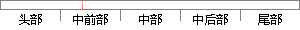

至于如何去解决这些噪声，我们首先需要去识别噪声并且能够定位出噪声的方向和位置，这就是声源定位问题的一个实例。
片段位置图

相似结果|
1
原句片段：至于如何去解决这些噪声，我们首先需要去识别噪声并且能够定位出噪声的方向和位置，这就是声源定位问题的一个实例。
相似片段 1：要解决这些噪声问题,首先需要识别噪声并定位噪声是从哪里发出来的,是由什么设备或部件造成的,这就是声源定位问题。声源定位技术是确定一个声音在空间来源位置的技术...
|
※ 片段修改建议 ※
近似词参考：- 如何：若何 怎样
- 解决：办理
- 我们：咱们
- 首先：起首
- 需要：必要
- 识别：辨认
- 能够：可以或许
- 方向：标的目的 偏向
- 就是：便是
- 问题：题目
系统自动生成语句：至于若何去办理这些噪声，咱们起首必要去辨认噪声并且可以或许定位出噪声的标的目的和位置，这便是声源定位题目的一个实例。
注：本片段修改建议为系统自动生成，仅供参考。